Настройка VPN для Windows (v2rayN)
1. Загрузка v2rayN
Скачайте последнюю версию v2rayN.
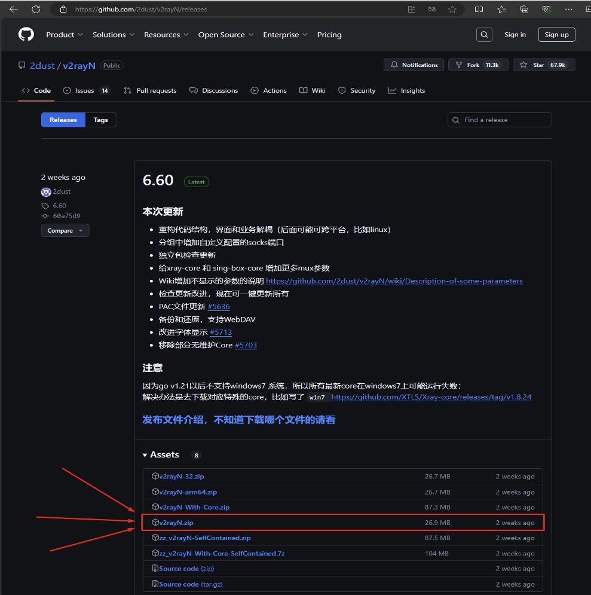
2. Установка v2rayN
Распакуйте архив v2rayN.zip и запустите v2rayN.exe из распакованной папки.
Если появится окно с предложением скачать .NET Runtime:
- Нажмите "Download it now"
- Установите скачанный файл windowsdesktop-runtime-8.0.10-win-x64.exe
- Перезапустите v2rayN.exe
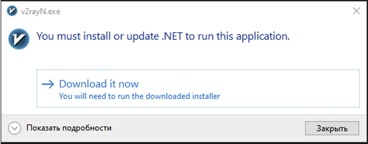
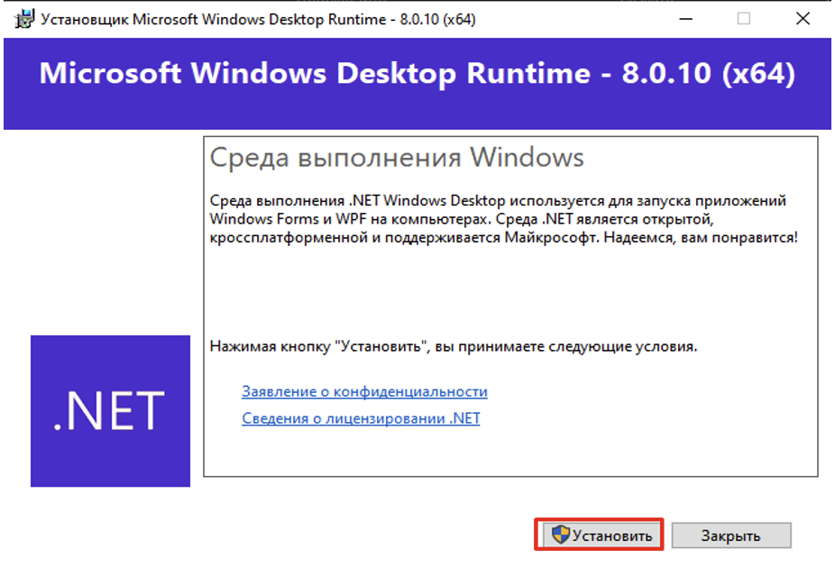
3. Настройка языка интерфейса
Смените язык интерфейса на русский или английский:
- Нажмите на три точки в верхнем правом углу
- Выберите "en" (английский) или "ru" (русский)
- Перезапустите приложение
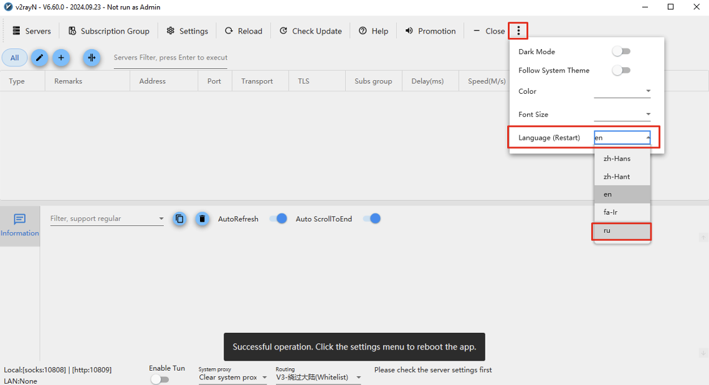
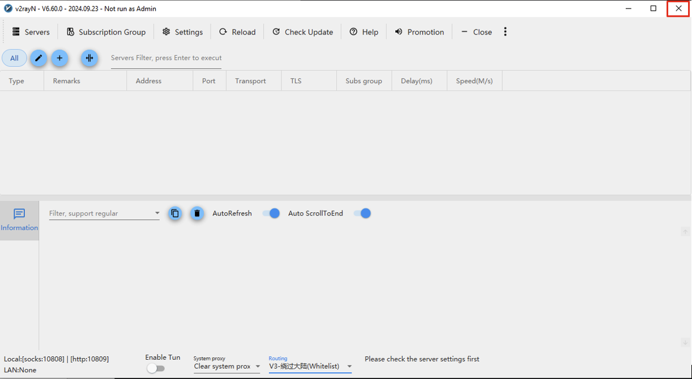
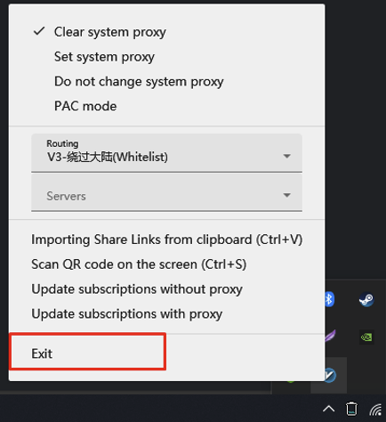
4. Импорт конфигурации VPN
- Скопируйте ссылку, предоставленную администратором VPN
- В v2rayN выберите: Сервера -> Импорт массива URL из буфера обмена
- Обновите подписку: Группа подписки -> Обновить подписку с прокси
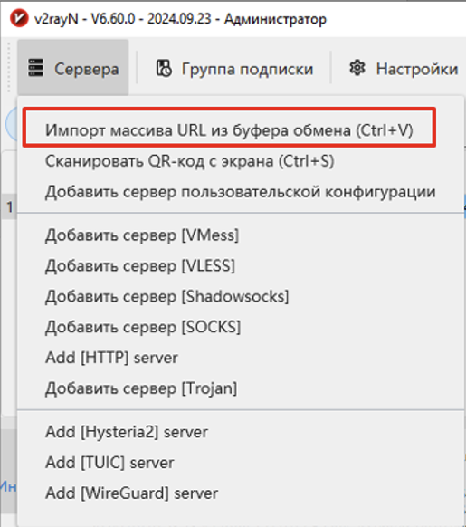
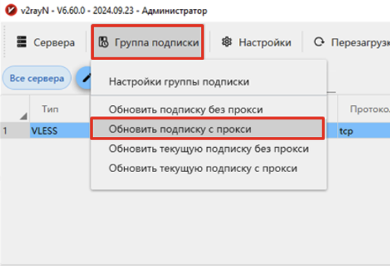
5. Установка Xray
- Перейдите на страницу Xray-core releases
- Скачайте Xray-windows-64.zip
- Распакуйте архив и скопируйте wxray.exe и xray.exe в папку v2rayN\bin\Xray
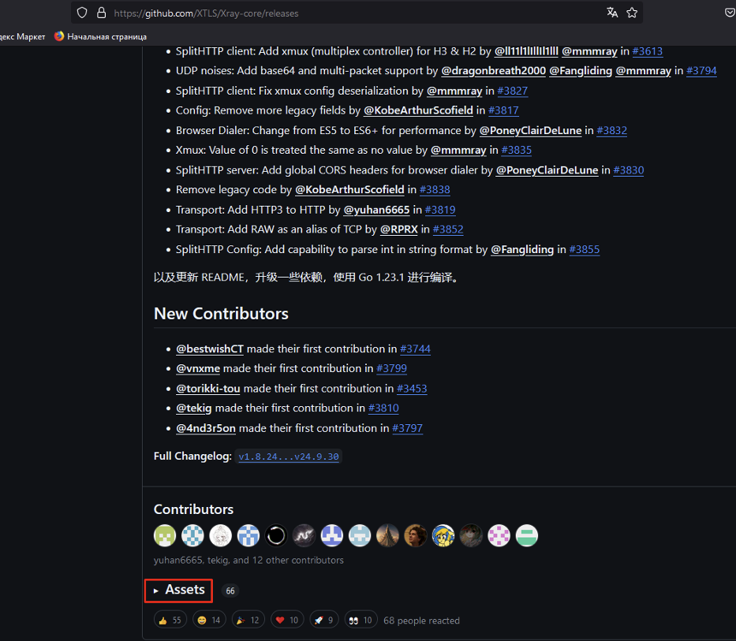
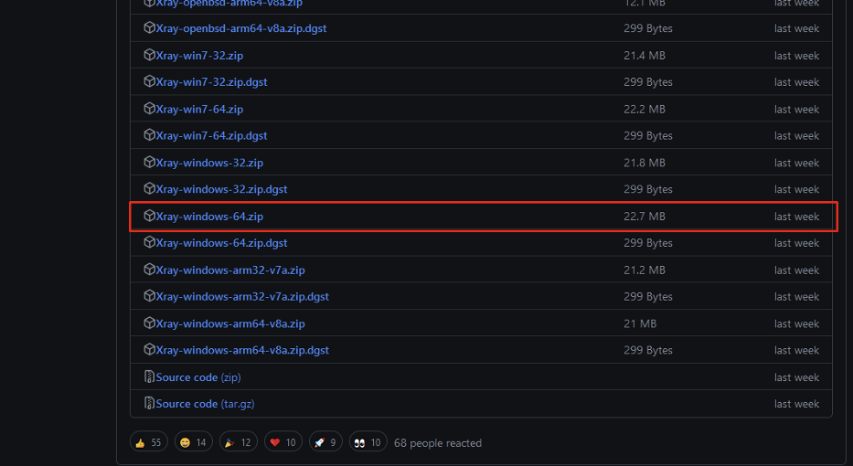
6. Финальная настройка v2rayN
- Установите системный прокси
- Настройте маршрутизацию
- Активируйте режим VPN
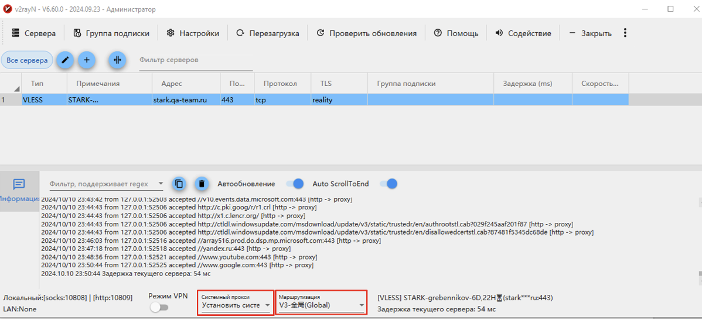
Настройка VPN для iPhone/Mac OS
2. Копирование ссылки на подписку
Скопируйте ссылку на подписку, которую вам прислал администратор
3. Добавление подписки
- Откройте приложение Streisand
- Нажмите "+" в правом верхнем углу
- Выберите в появившемся меню пункт "Добавить из буфера"
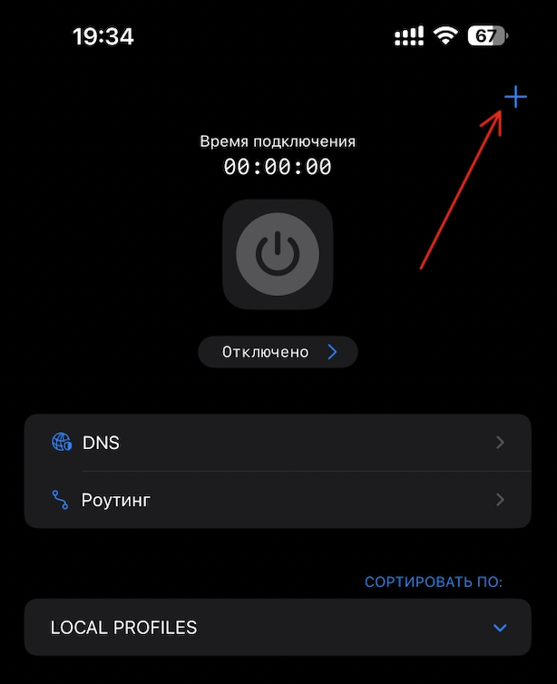
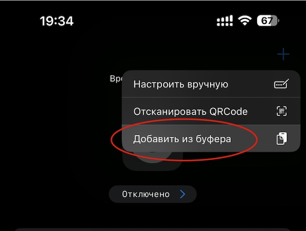
4. Подключение VPN
- Нажмите на иконку подключения
- Разрешите добавление профиля VPN
- Введите пароль от вашего устройства для подтверждения
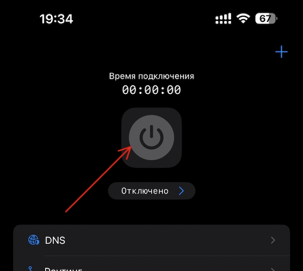
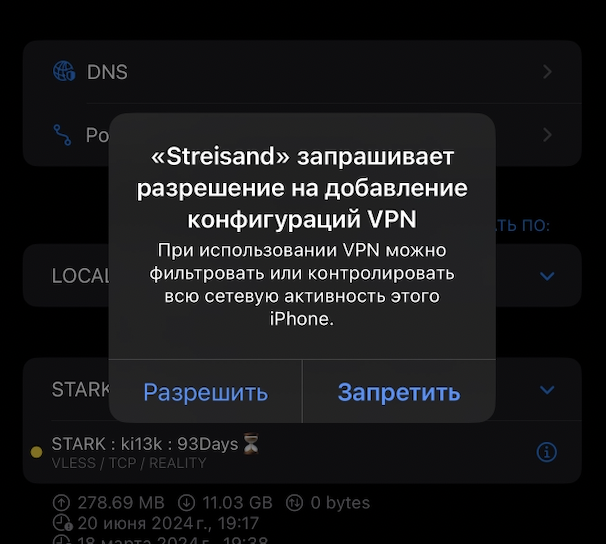
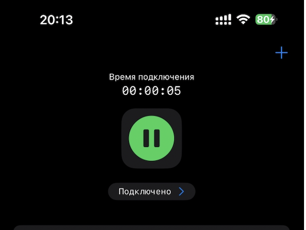
5. Проверка срока действия подписки
В нижней части экрана вы увидите количество дней, оставшихся в подписке, а также количество израсходованного трафика.
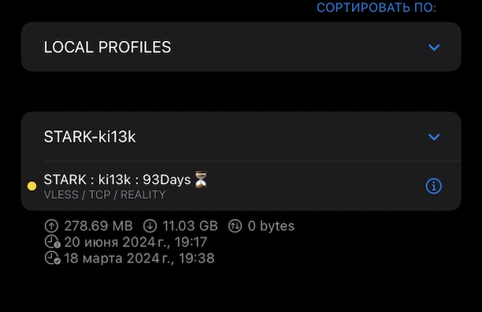
Настройка VPN для Android
2. Добавление подключения
- Откройте приложение v2rayNG
- Нажмите "+" в правом верхнем углу
- Выберите в появившемся меню пункт сканирования QR Кода
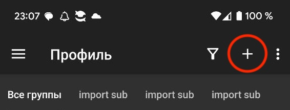
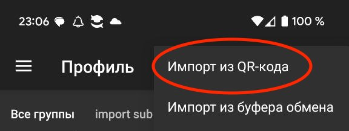
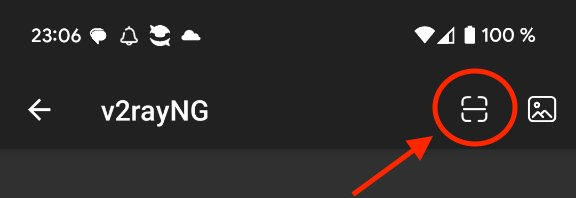
3. Подключение VPN
- Нажмите на иконку подключения
- Дождитесь запуска службы VPN
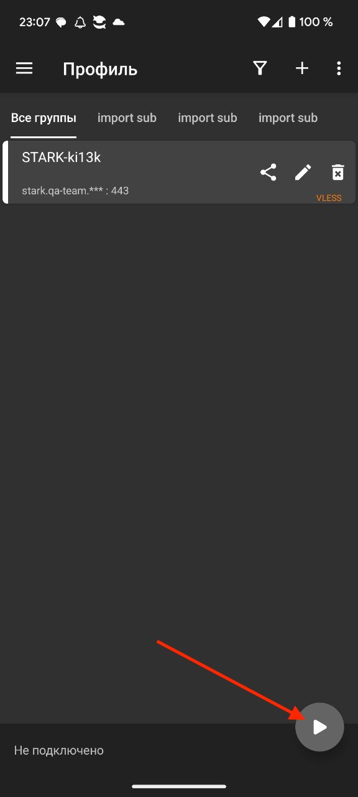
4. Проверка статуса подключения и отключение VPN
В нижней части экрана вы увидите cтатус подключения и кнопку отключения.
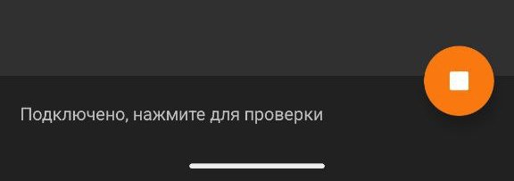